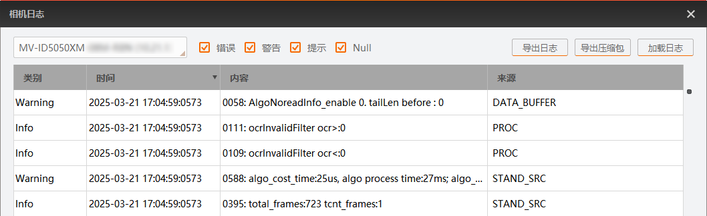

读码器日志主要用于查看读码器自身的日志信息。一般在使用读码器遇到问题时，可尝试通过读码器日志查看问题原因。
IDMVS已连接需查看读码器日志的读码器。
所连接读码器属于基础型极小型智能读码器、紧凑型智能读码器、紧凑型(Mini)智能读码器、全功能型智能读码器或全功能型(Mini)智能读码器。
若读码器不支持该功能，则提示“加载失败，原因：设备不支持”。
若读码器支持该功能，则该工具会显示所选读码器的日志信息，如下图所示。

读码器日志类型分为错误（即Error）、 警告（即Warning）、提示（即info）、 Null（其他）4种。
读码器日志将以文件夹的形式保存在选择的存储路径下。
读码器日志将以zip压缩包的形式保存在选择的存储路径下。
导出读码器日志后，将其提供给本公司技术同事，我们会协助您进行问题的定位和排查。